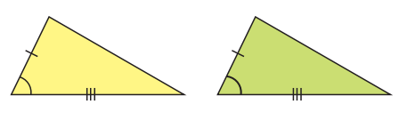

1. Peserta didik dapat menjelaskan pengertian kekongruenan dua segitiga
2. Peserta didik dapat menggunakan konsep kekongruenan dua segitiga untuk menyelesaikan masalah
Konsep Kekongruenan Antar Bangun Datar
Serupa dengan kekongruenan pada bangun datar.
Dua segitiga dikatakan kongruen jika memiliki bentuk dan ukuran yang sama
Contoh Kekongruenan Dua Segitiga
Berikut adalah contoh kekongruenan dua segitiga pada payasan Ogoh-ogoh
Gerakan slider dan amati segitiga ABC dan EFG.
Syarat Kekongruenan Dua Segitiga
Syarat Sisi-Sisi-Sisi
Perhatikan ilustrasi berikut!Perhatikan bahwa ketiga pasangan sisi yang bersesuaian sama panjang, ini biasa disebut dengan kriteria kekongruenan Sisi-Sisi-Sisi
Syarat Sisi-Sudut-Sisi
Dua pasang sisi yang bersesuaian sama panjang dan sudut yang diapitnya sama besar, ini biasa disebut dengan kriteria Sisi-Sudut-Sisi.

Syarat Sudut-Sisi-Sudut
Dua pasang sudut yang bersesuaian sama besar dan sisi yang diapitnya sama panjang, ini biasa disebut dengan kriteria Sudut-Sisi-Sudut
Syarat Sudut-Sudut-Sisi
Dua pasang sudut yang bersesuaian sama besar dan sepasang sisi yang bersesuaian sama panjang, ini biasa disebut dengan kriteria Sudut-Sudut-Sisi.
Syarat Khusus Segitiga Siku-siku
Khusus segitiga siku-siku, kekongruenannya dapat diuji dengan melihat panjang sisi miring dan salah satu sisi siku-siku yang bersesuaian.
Contoh Soal dan Pembahasan
Perhatikan gambar berikut
Jika segitiga ABC dan PQR koongruen maka tentukanlah sisi-sisi dan sudut-sudut yang bersesuaian!
Perhatikan gambar berikut
Jika segitiga ABC dan DEF koongruen maka tentukan panjang masing-masing sisi segitiga DEF!